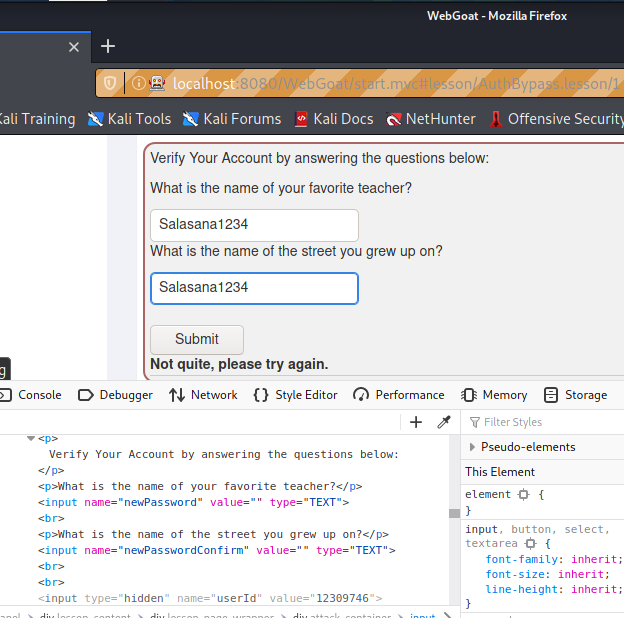
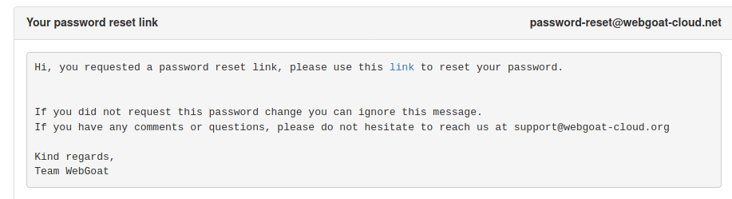
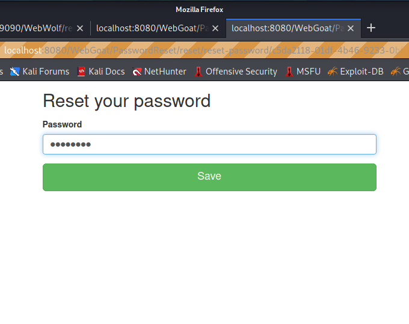
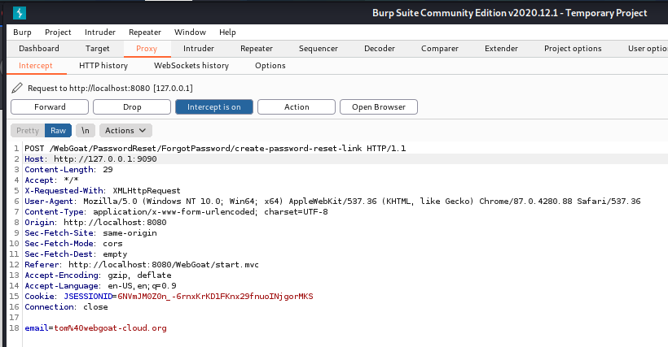
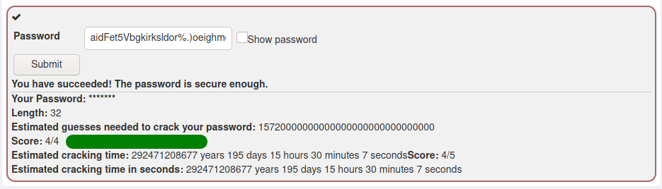
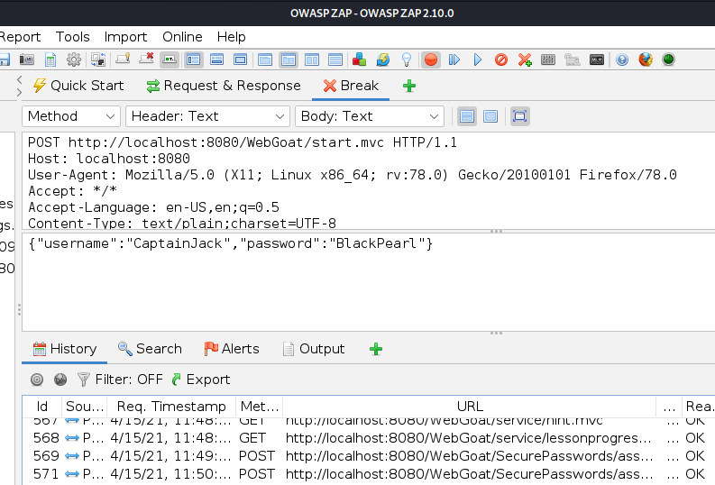
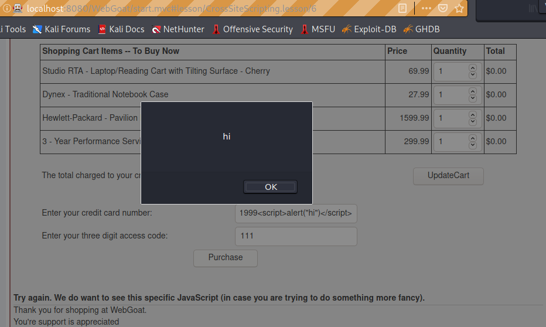

Tunkeutumistestaus -kurssin raportti, osa 3
Tämä on tehtäväraportti Haaga-Helian Tunkeutumistestaus -kurssilta, missä tarkastelemme erilaisten järjestelmien tietoturvallisuutta ja tarkastellaan miten hakkerit näkevät järjestelmän pyrkiessään tunkeutumaan niihin.
Raportin tekijä: Jyrki Aho
Sosiaalinen hyökkäys (Case tapaus)
Kuten Rikun kalvoilta kävikin ilmi, niin suurin osa sosiaalista hyökkäystavoista vaikuttiolevan pishing -hyökkäyksiä. Mutta löysin lopulta pari kiinnostavaa tapausta aiheeseen liittyen. Ensimmäinen tapaus oliin esitelty Stuppin artikkelissa ja jota käsiteltiin myös Tessian artikkelissa. Kyseisessä sosiaalisessa hyökkäyksessä oltiin käytetty tekoälyllä varustettua ohjelmistoa, jonka avulla hyökkääjä muutti äänensä vastaamaan uhrin pomon ääntä ja näin onnistui vakuuttamaan uhrinsa rahansiirron tärkeydestä. Hyökkääjä soitti kolme erillistä puhelua ja kolmannella puhelulla hän yritti saada uhrin siirtämään uudestaan rahaa. Uhrin hälytyskellot alkoivat kuitenkin soida siinä vaiheessa, kun hän ei ollut saanut vahvistusta ensimmäisestä rahansiirrosta ja koska kolmas puhelu tuli yllättäen Itävallasta. Tämän seurauksena hyökkääjä ehti saamaan 220 000 €, jotka hän onistui siirtämään ajoissa pienempinä erinä muihin pankkeihin, josta ne siirrettiin edelleen muualle.
Viranomaisten mukaan tämä on ensimmäinen tekoälyllä suoritettu hyökkäys ja asiantuntijat arvelevat, että vastaavankaltaiset hyökkäykset tulevat jatkossa yleistymään. Vaihtoehtoisia tapoja tämän hyökkäyksen suoritukseen olisi tietenkin ollut olemassa, mutta äänen muuttaminen vastaamaan toista henkilöä oli aivan uudenlainen hyökkäys, mitä ei kukaan osannut ennakoida. Hyökkäyksen vakuuttavuutta lisää myös se, että uhriksi valittiin vanha työntekijä, joka tunsi pomonsa entuudestaan. Mikäli kyseessä olisi ollut uusi työntekijä, niin tälöin hyökkäys olisi ollut melko perinteinen vishing-hyökkäys. Toisaalta uudet työntekijät todennäköisesti koulutetaan tällaisia hyökkäyksiä varten, joten tämä hyökkäyskeino saattaa olla varsin tehokas kun se kohdistetaan vanhoihin työntekijöihin. Rikun kalvojen mukaan voitaisiin sanoa, että hyökkääjä vetosi tässsä tapauksessa johtoasemaan (Authority) ja kiireellisyyteen (Scarcity). Koska uhhriksi valittiin vanha työntekijä, niin todennäköisesti hyökkäyksessä käytettiin apuna myös yhteenkuuluvuuden tunnetta (Reciprocity). Hyökkäyksen torjuntakeinoina voidaan käyttää koulutusta ja ohjeistusta, että vaikka esimiehillä ja rahansiirroilla olisi kuinka kiire, niin rahansiirrot on vahvistettava erikseen. Toisin sanoen takaisin soitolla rahansiirron lähettäjälle ja mahdollisesti soitolla myös rahansiirron pyytäjän esimiehelle tai vastaavalle taholle, joka voi vahvistaa rahansiirron tarpeellisuuden. Työntekijä onnistui tässä tapauksessa rajoittamaan hyökkäyksen vaikutuksen toimimalla ammattimaisesti ja havainnoimalla muuttuvan puhelinnumeron ja reagoi tilanteeseen nopeasti.
Toinen kiinnostava tapaus oli hieman vanhempi, joka esiteltiin Open Data Securityn artikkelissa ja josta oli Stephen Castlen artikkeli Indepencende lehdessä. Siinä hyökkääjä esiintyi toisena henkilönä usean vuoden ajan hankkien pankkityöntekijöiden luottamuksen luotettavana asiakkaana ja liikemiehenä. Hän onnistui saamaan uhrinsa pitämään (Liking) ja luottamaan itseensä (Reciprocity). Koska hän esiintyi pankin työntekijöille menestyvänä liikemiehenä, niin työntekijät tunsivat yhteneväisyyttä (Unity) ja uskomusta tekemisiinsä (Commitment & Consistency). Hyökkääjä ei pyrkinyt luomaan kiireellisyyttä työntekijöihin, vaan odotti tilaisuuttansa iskeä. Eräänä päivänä pankin työntekijät tarjosivat hyökkääjälle pääsyn timanteilla varustettuun tallelokeroon, jolloin hyökkääjä käytti tilaisuutta hyväksi ja suoritti 21 miljoonan euron koruvarkauden vai pitäisikö sanoa timanttivarkauden. Tämä varkaus onnistui siitäkin huolimatta, vaikka tilat oltiin suojattu noin miljoonan euron arvoisilla turvalaitteilla.
Analysoinkin jo hieman Rikun oppien mukaan tätä tapausta. Hyökkäys olisi tietenkin voinut olla hieman suorasukaisempi, mutta en usko että se olisi tuottanut näin hyvää tuottoa kuin tässä tapauksessa, missä hyökkääjä esiintyi timanttienvälittäjänä. Pankin pitäisi säänöllisin väliajoin tarkistaa tilien tai passien oikeellisuus, jotta henkilöt eivät voisi avata tilejä väärillä passeilla. Lisäksi jos henkilöille annetaan kortit, joiden avulla he voivat jättää timantteja yön yli tallelokeroon, niin kyseiset avainkortit pitäisi ohjelmoida joka kerta erikseen, jotta kukaan ei voisi kopioida niitä käydessään holvissa. Toisin sanoen kortin numerosarja ja pin -numero muutettaisiin jokainen kerta, kun henkilö jättää jotakin tallelokeroon. Tällöin ainoa keino tunkeutua muiden henkilöiden tallelokeroon vaatisi fyysistä tunkeutumista tai brute force -menetelmää. Lisäksi kun joku henkilö on tällaisessa holvissa, niin hänen tekemisiään pitäisi seurata reaaliaikaisesti. Toisaalta ueimmissa pankkiholveissa ei ole kameroita mahdollisesti juuri sen vuoksi, ettei paljastettaisi liikaa holvin sisäisestä rakenteesta mahdollisen tietomurron yhteydessä.
Lähteet
Open Data Security, 2017. The Most Famous Cases of Social Engineering. Luettavissa: https://opendatasecurity.co.uk/the-most-famous-cases-of-social-engineering/. Luettu 17.14.2021.
Castle, S., 2007. Thief woos bank staff with chocolates - then steals diamonds worth £14m, Luettavissa https://www.independent.co.uk/news/world/europe/thief-woos-bank-staff-chocolates-then-steals-diamonds-worth-163-14m-5332414.html. Luettu: 17.4.2021.
Tessian, 2020. 6 Social Engineering Examples: Real-World Attacks. Luettavissa: https://www.tessian.com/blog/examples-of-social-engineering-attacks/. Luettu: 17.4.2021.
Stupp, C., 2019. Fraudsters Used AI to Mimic CEO’s Voice in Unusual Cybercrime Case. Luettavissa: https://www.wsj.com/articles/fraudsters-use-ai-to-mimic-ceos-voice-in-unusual-cybercrime-case-11567157402. Luettu: 17.4.2021.
Tiivistelmä Rikun lähteistä
- Tarkastelemalla OSINT Techniques -sivustoa, niin oli yllätys kuinka monesta paikasta henkilöstä voi hakea tietoja ja että Youtube -videoiden metatietoihin jää sijainti ylös. Olin olettanut että Youtube automaattisesti siivoaisi nämä tiedot pois, kun järjestelmä pakkaa näitä videoita. Näitä työkaluja käyttämällä pystyy varmasti selvittämään missä mahdollinen uhri viettää aikaa.
- dnstwist -työkalun avulla pystyy paljastastamaan ne domain nimet, jota muistuttavat esimerkiksi yrityksen domain nimeä. Tällä tavalla pystyy paljastamaan mahdolliset potentiaaliset hyökkäykset, jotka kohdistuvat yritykseesi tai yrityksen asiakkaita kohtaan. Webbisivulla on hyvä esimerkki siitä kuinka moni hyökkäys kohdistuu githubia kohtaan. Vaikuttaa erinomaiselta työkalulta paljastaa potentiaaliset pishing hyökkäykset.
- Foca -työkaluna vaikutti mielenkiintoiselta, koska se mahdollistaa dokumenttien analysoinnin, minkä lisäksi se etsii internetistä kaikki muut dokumentit, jotka kyseinen henkilö tai tiimi ovat tehneet. Kun tarkemmin ryhtyy miettimään, niin tämähän on oleellinen osa taustatyötä, koska siten löytää uhriin liittyvät läheiset henkilöt, joita voi mahdollisesti käyttää "apuna" hyökättäessä kohteeseen. Tällöin voi puhua esimerkiksi henkilöitä nimeltä ja esiintyen siten kuin tuntisi heidät. Myös mahdolliset henkilön ajatukset ja ideologiat voivat paljastua tutkittaessa dokumentteja, jolloin hyökkäyksessä voidaan käyttää tehokkaammin apuna reciprocity ja unity -ideologiaa.
Lähteet
OSINT Techniques - https://www.osinttechniques.com/
DNS Twist (discover potential phishing domains) - https://github.com/elceef/dnstwist
FOCA (document metadata analysis) - https://www.elevenpaths.com/labstools/foca/index.html
WebGoat hyökkäys (jatkoa...)
A2 Broken authentication: Authentication bypasses: 2 2FA Password Reset
Koitin hyökätä kysymyslomakkeen kimppuun poistamalla secQuestions -parametrit ZAP-ohjelman avulla, kuten tekstissä mainittiin, mutta kyseinen hyökkäys ei toiminut. Katsoin ohjelman lähdekoodia ja havaitsin, että samalla sivulla oli myös form -lomake. Kokeilin muuttaa kyselylomakkeen samankaltaiseksi kuin salasanalomakkeen, mutta kyseinen hyökkäys ei näyttänyt toimivan tähän lomakkeeseen.
Muutaman kokeilun jälkeen päätin etsiä netistä ohjeet tähän hyökkäykseen ja löysin Lim Jet Ween Youtube-kanavan, missä hänen hyökkäyksensä oli esitetty. Ilmeni että pelkästään parametrin nimeä muuttamalla hyökkäys onnistuu. Mietin miten tällaisen hyökkäyksen läpimeno on mahdollista ja eikö serveripäädyssä ohjelma yritä lukea juuri tietynnimisiä parametreja ja tarkistaa niiden arvot? Mutta pitää laittaa mieleen, että yksittäisen parametrin nimen muuttaminen saattaa sekoittaa ohjelman logiikan. Totesin myös että kun tämä hyökkäys toteutetaan ZAPissa, niin hyökkäys ei mene läpi. Tämän jälkeen siirryin käyttämään hyökkäystyökaluna Burp Suite -ohjelmaa, minkä jälkeen hyökkäys onnistui. Hieman jäi ihmetyttmään, miksi sama toimenpide ei toimi ZAPissa, mutta toimii Burpissa. Onko mahdollista ettei ZAPissa voi nykyisin muuttaa Headereita?
Tämän jälkeen hyökkäsin kohti salasanojen resetointia kohti. Siellä sivulla neljä oli turvakysymykseen perustuva salasanan palauttaminen, joka oltiin suunniteltu siten, että käyttäjän olemassaolon pystyy selvittämään kyselyn perusteella. Kun käyttäjän olemassaolo on varmistettu, niin tämän jälkeen voi hyökätä käyttäjän turvakyselyä kohti. Kokeilin eri värivaihtoehtoja ja totesin Larryn turvasanan olevan Yellow, Tomin turvasanaksi on purple ja adminin turvasana oli green. Tämän hyökkäyksen olisi mahdollisesti voinut suoritaa esimerkiksi Pythonilla tehdyn koodinpätkän avulla. Koska kyseessä oli kolme henkilöä ja oli selvitettävä mikä heidän salattu värinsä on, niin tilanne olisi ollut tällöin sama kuin olisi lyönyt lekalla kärpästä. Mikäli käyttäjiä olisi ollut useita, niin tällöin hyökkäyksen automatisointi olisi ollut tarpeen. Eli ensin oltaisiin testattu ohjelmallisesti kaikki mahdolliset käytttäjätunnukset käymällä läpi nimi, sukunimi ja syntymävuosi avaruus, jolloin oltaisiin saatu käytyä läpi iso osa käyttäjistä. Tämän jälkeen oltaisiin näitä käyttäjiä kohti voitu hyökätä käymällä läpi väriavaruus, joka puolestaan on huomattavasti pienempi avaruus. Tällä tavoin oltaisiin voitu löytää useita potentiaalisia hyökkäyskohteita. OWASP varuudessa todennäköisesti kaikkiin kohteisiin oltaisiin voitu hyökätä. Todellisessa elämässä mahdollisesti oltaisiin päästy käsiksi 70 - 80 % käyttäjän tiliin, olettaen että brute-force hyökkäystä ei oltaisi havaittu. Todellisuudessa tällainen hyökkäysmuoto olisi soittanut useitakin hälytyskelloja, minkä vuoksi hyökkääjän olsii mahdollisesti rajattava hyökkäys yleisimpiin nimiin ja hyökätä pitkän ajan kuluessa.
Tämän jälkeen käytiin läpi salasanan turvakysymysten turvallisuutta ja mitä ongelmia erilaiset kysymykset sisältävät. Kaksi vaihtoehtoa piti valita, jotta tehtävä merkittäisiin suoritetuksi. Kokeilin ajokortin viisi viimeistä numeroa, missä todettiin ongelmaksi että ne voivat noudattaa jotakin tiettyä kaavaa. Myös ensimmäinen henkilö jota suuteli on huono, koska hyökkääjä voi kokeilla kaikkia tavallisimpia nimiä päästäkseen tiliin käsiksi. Kokeilin muitakin turvakysymyksiä ja ilmeni että yllättävän moneen kysymykseen voi löytää tiedon sosiaalisesta mediasta. Itse en olisi valinnut sellaista kysymystä kuin suosikkiopettajani kolmannella luokalla, koska suomalainen koulujärjestelmä on tämän suhteen yksinkertaisempi kuin muiden koulujärjestelmien. Itse eesimerkiksi muistan kolmannen luokan opetajan nimen ja uskaltaisin väittää löytäväni kyseisen nimen netistä. Vähnitään olisin voinut rajata opettajien nimiä etsimällä vanhoja tietoja koulusta ja sen opettajista. Tällaisen etsintä webistä ja eliminointiohjelman tekeminen tämän kysymyksen pohjalta saattaisi olla hauskan oloinen pienimuotoinen haaste.
Kokeilin lopuksi yrittää napata tomin salasanan, koska jokainen kerta kun tom saa viestin, niin hän vaihtaa salasanansa. Sivustolla mainittiin ettei console tai zap auta hyökkämisessä ja ehdotettiin curlia hyökkäystyökaluksi. Kokeilin kirjoittaa komentotulkkiin curl --help ja totesin etten ymmärrä miten sitä voitaisiin käyttää hyökkäystyökaluna. Etsin netistä ratkaisua tähän ongelmaan ja löysin sellaisen nimimerkin kuin Pen Tester 123. Nopeasti kelasin hänen ratkaisunsa läpi ja hän ei ollut käyttänyt curlia hyökkäystyökalunavaan Zap-ohjelmaa. Ajattelin itse kokeilla samaa hyökkäystapa myöhemmin ja jatkoin culr hyökkäyksen etsimistä, mutta en löytänyt sellaista ratkaisua missä sitä oltaisiin käytetty apuna. Eli tämä curl hyökkäyksen ajatus jäi minulta ainakin pimentoon. Eli kun käyttäjä unohtaa salasanansa, niin hän lähettää lomakkeen kautta sähköpostin, josta lähetetään sähköpostitse linkki, minkä avulla salasana voidaan vaihtaa. Kun lähetän tämän viestin omalle tililleni, niin viesti näyttää seuraavanlaiselta:
Viestissä oleva linkki johtaa alla olevan sivun näköiselle sivulle.
Kuten osoiterivistä näkyy, niin reset-passwordin jälkeen tulee uniikki merkkijono, joka todennäköisesti on vain tietyn aikaa voimassa. Koska kyseessä on uniikki ja satunnaiswen näköinen merkkijono, niin voidaan olettaa ettei brute force -menetelmä auta murtamaan tätä. Toisin sanoen meidän on jotenkin kyettävä ohjaamaan tämä saapuva linkki jollekin muulle sivulle. Kuten sivustolla mainittiin, niin ZAP ei toimi tätä hyökkäystä suoritettaesssa. kokeilin varmuuden vuoksi ZAPia ja totesin että kyseistä ohjelmaa ei tosiaankaan voi käyttää hyökätessä. Tästä syystä käytin Burp Suite ohjelmaa hyökkäystä tehtäessä. Kirjoittamalla Hostiin osoitteen 127.0.0.1:9090 (kuvassa virhe tässä kohtaa), niin viestit ohjautuivat WebWolf palvelimen ja sitä kautta pääsin muuttamaan tomin salasanaa, ilman että tom sai tiedon tästä.
A2 Broken authentication: Secure Passwords: 4 How long could it take to brute force your password
Jos oikein ymmärsin, niin tämän moduulin tarkoituksena oli opettaa käyttäjille mitä voidaan pitää turvallisena salasanan. Ihmettelin vain ettei ohjelmaan suorittanut minkäänlaista sanakirjahyökkäystä. Kokeilin algoritmin toimintaa kirjoittamalla salasanaksi MariKiviniemi, jolloin ohjelma ilmoitti salasanan olevan vahva. Kokeilin kuitenkin huvikseni testata salasana -järjestelmää omalla arpomistavallani. Asetin salasanaksi aidFet5Vbgkirksldor%.)oeighmcksja, jonka lopputulos on nähtävissä seuraavassa kuvassa.
A3 Sensitive data exposure: Insecure Login: 2 Let's try
Onnistuin nappaan ZAP ohjelman avulla kirjautumisviestin sisältämän tunnuksen ja salasanan. Ajattelin tämän jälkeen kokeilla napata salasanan realistisemmalla vaihtoehdolla ja kokeilin Wiresharkilla, niin jostakin syystä kyseinen ohjelma ei napannut kyseisiä paketteja.Johtuisiko tämä siitä syystä, kun viestiliikenne kulkee koneen sisällä? Toinen vaihtoehto on, että minulla oli jotkin asetukset laitettu väärin.
A7 Cross Site Scripting (XSS): Cross site scripting
Seuraavaksi tarkastellaan WebGoatissa XSS -hyökkäyksiä. Kyseisellä hyökkäkysellä tarkoitetaan oman hyökkäävän koodin upottamista jollekin sivulle tai mainosohjelmalle, minkä kautta saadaan ujutettua haittakoodi ajettavaksi jonkun toisen henkilön selaimelle. Kun selain ajaa tämän haittakoodin, niin tämä voi mahdollistaa esimerkiksi toisen henkilön session kaappaamisen ja siten hyökkääjälle pääsyn kyseisen henkilön tilille kyseisessä palvelussa. Aluksi esiteltiin yksinkertainen javascript perusteinen XSS hyökkäys, jonka avulla voidaan ajaa koodia henkilön omalla koneella. Mutta tästä on kuitekin vielä vähän matkaa, ennen kuin koodi voidaan ajaa jonkuun muun koneella. Testatessani upottaa javascript koodia webbiselaimen osoitekenttään, niin totesin ettei webbiselaimet aja javascript koodia sieltä käsin. Tutkiessani askubuntun ja stackoverflown keskustelupalstoja, niin nykyisin nämä komennot on selaimissa automaattisesti estetty. Tosin nopean pikakoodin voi ajaa webbiselaimella, kun käyttää komentosarjaa data:text/html,<script>koodi;</script>. Tällä tavalla voi yrittää ujuttaa jotakin haitallista käyttäjän koneelle, mutta koodinpätkä ei toisaalta saa olla liian pitkä, minkä lisäksi sivusto on ohjattava muualle, ettei käyttäjä huomaa hyökkäystä. Kokeilin kuitenkin komennon toimintaa selaimen consolin avulla, vaikka tiesinkin vastauksen etukäteen.
Sivulla 7 oli etsittävä haavoittuvaisin kenttä mahdolliselle XSS hyökkäykselle. Klikkasin painiketta Purchase, jolloin selain ilmoitti ostosten loppusumman ja miltä kortilta ostokset veloitettiin. Upotin tähän korttitiedon perään komennon ≤script>alert("hi");</scrip>, jolloin ohjelma veloitti normaalisti ja samalla nosti esille ponnahdusikkunan.
Sivulla 10 olevan ohjeen avulla löysin javascript tiedoston GoatRouter.js ja sinne oli jäänyt sellainen testauskoodi kuin webgoat.customjs.phoneHome("..."). Tosin en ymmärtänyt mitä kyseinen ohjelma halusi saada vastaukseksi. Sivulla 11 tämä komento suoritettiin konsolissa ja kyseisen arvon piti sijoittaa kenttään, jolloin sen sai läpäistyä. Viimeisellä sivulla kyseltiin vastauksia XSS:tä joihin vastasin ja sain läpäistyä sen.
Lähteet
Lim Jet Wee, 2018. OWASP WebGoat 8 - Authentication Flaws - Authentication By pass - 2 FA Password Reset. Katsottavissa: https://www.youtube.com/watch?v=Og3vNKnUSac. Katsottu 15.4.2021.
Pen Tester 123, 2018. Owasp Webgoat 8 Solutions - Password Reset (Part 3 - Reset Password for Tom). Katsottavisa: https://www.youtube.com/watch?v=N48MgKxyefA. Katsottu: 15.4.2021.